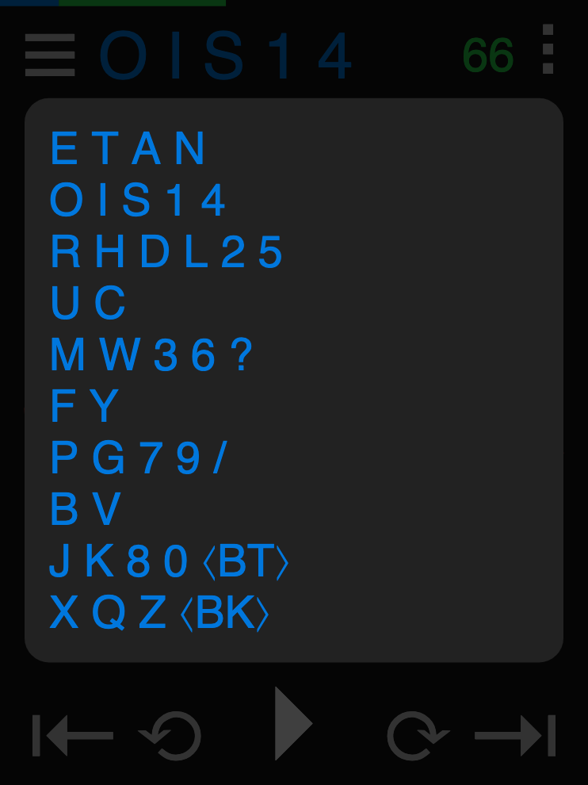

Practice copying and sending CW/Morse Code with the DiDahDit App! Explore the features below.
The app is tailored for mobile phones but works in any browser. Even on a watch or in a Tesla!
Press the (red) phrase to hear (and see) the characters sounded.

Press play (▸) to sound each phrase and automatically advance through the lesson. Phrases are hidden while being sounded, then a “ding” is played to indicate that the phrase is complete. Finally, the phrase is spoken and shown. Try to copy each phrase in your head before it's spoken. After a short pause, it moves on to the next phrase.
Normally, phrases remain hidden when you pause so that you can continue the lesson later without having revealed the next phrase. However, you may tap the question mark to show the phrase.
ⓘ Tip: Press the question mark while playing to toggle hiding. This will highlight each character as it is sounded. The goal is to copy in your head, but sometimes it's helpful to initially build an association between the sounds and letters by seeing them while hearing them.
Navigate the phrases within each lesson by pressing the left (⟲) and right (⟳) icons or with arrow keys on a keyboard. Navigate entire lessons by pressing the left (⇤) and right (⇥) icons or with shift-arrow keys on a keyboard.
The current lesson (in blue) and a phrase countdown (in green) are shown along with a thin progress bar along the top.
ⓘ Tip: Note that the (green) phrase number begins at the number of phrases within the lesson and counts down to 1.
Select from a menu of lessons by pressing the (blue) title.
Select from available sets of content by pressing the menu (☰) icon.
You may also practice sending phrases in the lessons.
As you key characters, they are shown (in yellow) below the phrase. When the correct character has been keyed, the phrase will incrementally complete. If a mistake is made, a “dong” sound will play. This allows you to practice keying without looking at the screen. Once the word is complete, a “ding” will play and it will advance to the next phrase.
An external paddle or straight key can be used by way of the wonderful USB Key Interface from Ham Radio Solutions (Store tab).
On-screen single or dual paddles may be shown at the bottom of the screen to allow practicing without a keyboard or USB interface.
ⓘ Tip: Use the left/right square brackets or control keys on the keyboard as paddles.
The keyer mode and speed may be chosen in settings: Iambic A/B, Ultimatic, and Straight key.
The simplest is the Straight key, which merely sounds a tone while being pressed. Decoding to dit and dah elements is, of course, based on the length of time held. The speed should be set to roughly match your sending speed for the best decoding results.
ⓘ Tip: Two dits-length is the cutoff for decoding Straight key input. That is, a dit sent slower than half-speed (longer than two dits) will be decoded as a dah, while a dah sent faster than 1.5× speed (under two dits long) will be decoded as a dit. Adjust the Speed setting as needed.
The Iambic modes will send dits or dahs when a single paddle is pressed and will repeat when held. Pressing both paddles (“squeezing”) will produce automatically alternating dits and dahs. In Iambic A mode, elements will stop when a squeeze is released. In Iambic B mode, one more alternating element will be sent after releasing a squeeze.
Ultimatic mode will behave the same when a single paddle is pressed or held. However, when squeezing both paddles, only the paddle pressed last will repeat. This simple scheme results in all but one letter of the alphabet being accomplished with a single squeeze! In my opinion, Ultimatic is the best mode (see this video).
ⓘ Tip: Prosigns are surrounded with angle brackets (e.g. <bk>) and should be keyed without letter spacing.
It is common to have dits on the thumb paddle. If you're left-handed, you may want to reverse the default Polarity in settings.
Press the ellipsis (⁝) icon to change settings.

The Light/Dark (☼/☽) switch changes the color scheme throughout.

The overal Speed setting determines the rate in words-per-minute (WPM) at which code is sent and received. More precisely, it sets the unit "dit length." Dahs then are 3 dits long and space between elements is 1 dit. Normally, space between letters is 3 dits and between words is 7 dit (however, see the Farnsworth and Wordsworth settings below).
Of course, words have varying lengths, and so do individual characters in Morse Code. So, the canonical word “PARIS” is used to compute words-per-minute. It is 50 dits long — including element, letter, and trailing word spacing.

The Farnsworth setting is used to slow down the sending speed without increasing the space between elements (dit/dahs). See the Learning Correctly section below to see why you'd want to do this.
The Wordsworth setting also slows down the sending speed by instead increase the space between words. Again, see the Learning Correctly section below to see why you'd want to do this.
All of the speed-related settings are in words-per-minute. It doesn't make sense to set Farnsworth faster than the overall Speed or to set Wordsworth faster than Farnsworth so this is not allowed in the interface.
ⓘ Tip: If the Speed, Farnsworth and/or Wordsworth settings match, then adjusting one in the settings dialog will automatically adjust the matching ones below it.
The Pitch setting (in Hz) controls the frequency of the sounded Morse Code tones.
The Shuffle toggle indicates whether to advance through the phrases within each lesson in a randomized order. This is useful for content that has no inherent progression (e.g., call signs).
ⓘ Tip: Phrases are in a random but consistent order, much like a shuffled deck of cards. Flipping back and forth through a lesson will present the content in the same shuffled order. However, once you leave a lesson and return to it, the phrases are reshuffled. Note also that working from the beginning to the end of a lesson will still present each phrase exactly once.
The Keyer setting chooses the keying method used. See the Sending section above for a description of the keyer modes.
The On-screen setting shows/hides on-screen paddles or straight key.
The Polarity setting determines whether dits are on the left or right when using dual paddles.
Custom content can be added via the URL. A hash (#) followed by pipe-separated (|) phrases will cause a new Custom set of content to be created.
https://didahdit.com/#foo|bar BAZ

Words that are capitalized will be read phonetically. Prosigns should be surrounded with angle brackets (e.g., <bk>).
You may have noticed that nowhere in the app do you see dits and dahs written. Morse Code is an audible language. You should learn to recognize the sounds of the characters without thinking about any written form you may have seen elsewhere.
You should not count the dits and dahs. The complete sound of each character should be recognized as a whole. If necessary, turn the Speed up until counting becomes impossible (e.g., 25+ WPM). If you can't copy at this speed, then turn the effective speed down with the Farnsworth setting.
Eventually, you will begin to recognize entire words as a whole; especially common ones such as “CQ”, “TU” and “RST”. You may find that Farnsworth spacing makes recognition of words difficult. At this point, try turning up the Farnsworth speed to match the overall Speed and instead adjusting down the Wordsworth setting.
When practicing sending, try not to look at the screen. Keep track of your progress mentally and send by sound alone. Rely on your ear (or the “dong” sounds) to catch mistakes.
Straight key sending requires developing a good ear for proper timing. Dual paddles are more automatic but require more technique to use properly. For further information on using dual paddles, see this video on squeeze keying.